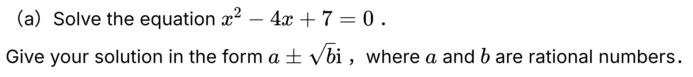

Level 3 Complex Numbers Walkthrough
2019 Complex Numbers · Q1(a)
2019 Complex Numbers
Question

Solve the equation \(x^2-4x+7=0\).
Give your solution in the form \(a\pm\sqrt{b}\,i\), where \(a\) and \(b\) are rational numbers.
First walkthrough idea
Focus to try first
Complete the square, then take the square root of a negative number using \(i^2=-1\).
Step 1
Complete the square
Move the constant term first. Adding \(4\) to both sides turns the left side into \((x-2)^2\).
Show the first step’s working
Walkthrough overview
What this question practises
This 2019 walkthrough is part of AS91577 — Apply the algebra of complex numbers in solving problems.
Method: Completing the square to solve a complex quadratic.
This is Question 1(a) from the 2019 NCEA Level 3 Complex Numbers paper for AS91577 — Apply the algebra of complex numbers in solving problems. Use the guided hints to practise the method before revealing the full working.
Calc.nz is an independent learning resource. Compare questions, diagrams, and assessment information with the official NZQA resources for AS91577.
Page updated .
Learning summary
Review the method, not only the answer
This walkthrough helps you practise completing the square to solve a complex quadratic. Use the hints to plan the method, then repeat the question without hints and check each step.
Check
Expand the proposed factors or model and check it against every given root, point and coefficient.
Calculus essentials: algebra, logarithms, rules, radians and domains
Continue practising
Try a related question: 2025 Complex Numbers · Q1(b). Attempt it before opening working, then return to this question later.
- All 2019 Complex Numbers walkthroughs
- All AS91577 Complex Numbers years
- Practise more questions using this skill: Complex-number algebra